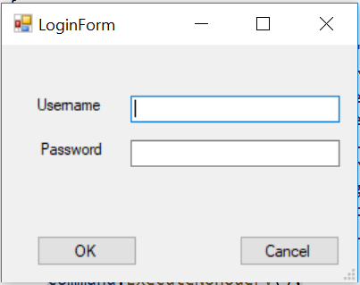
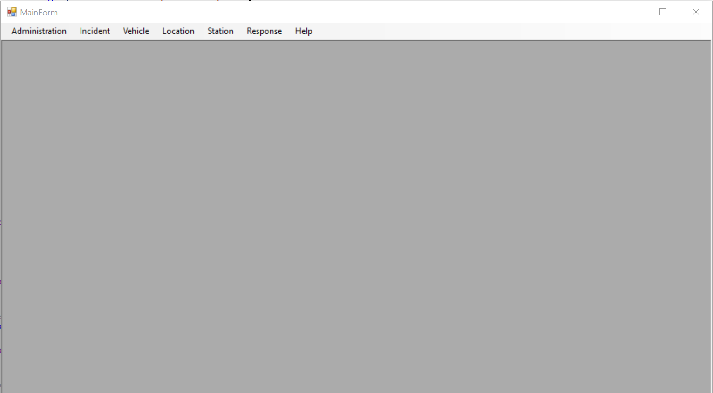
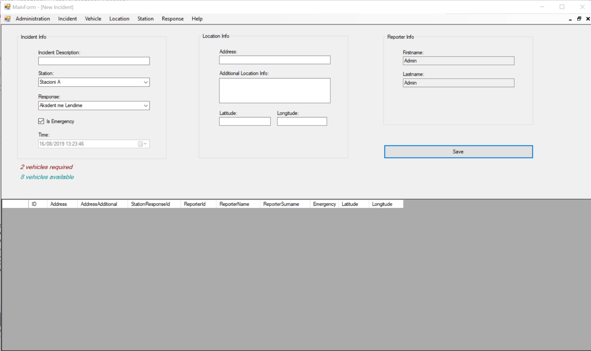
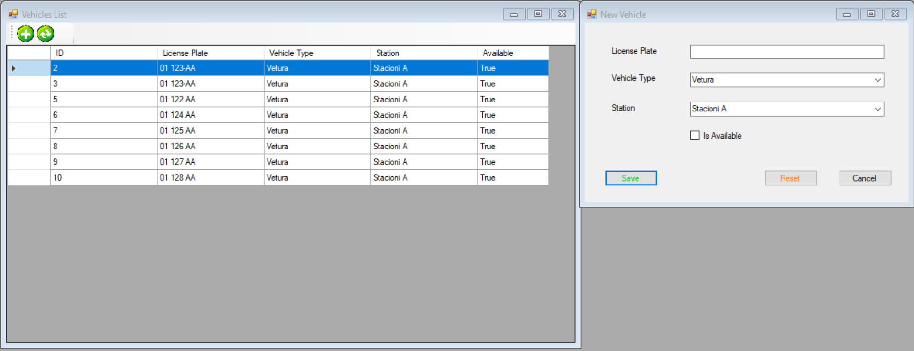
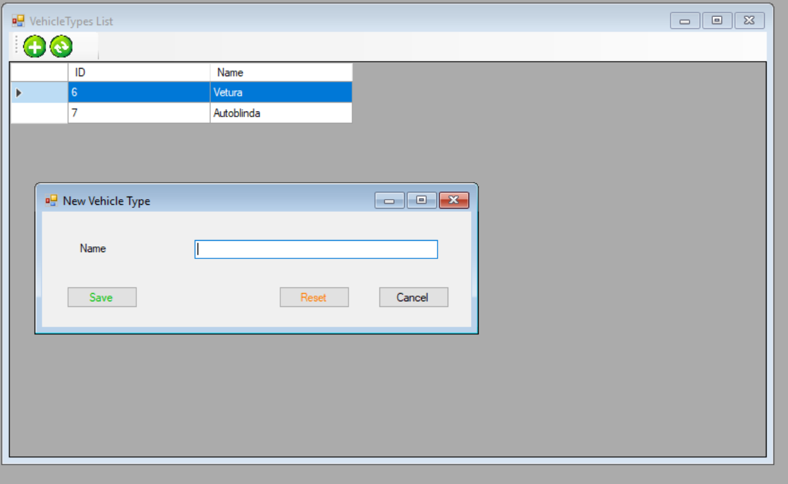
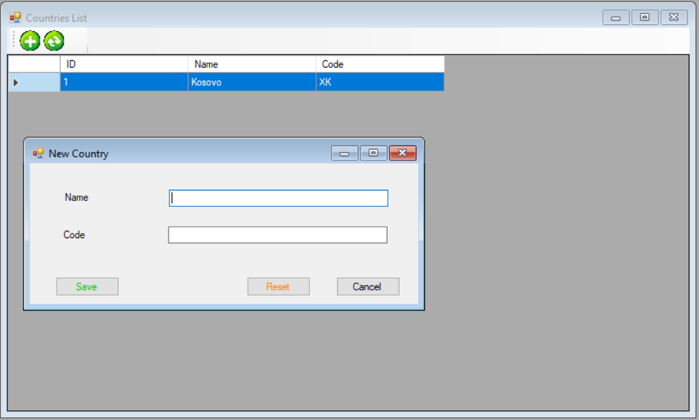
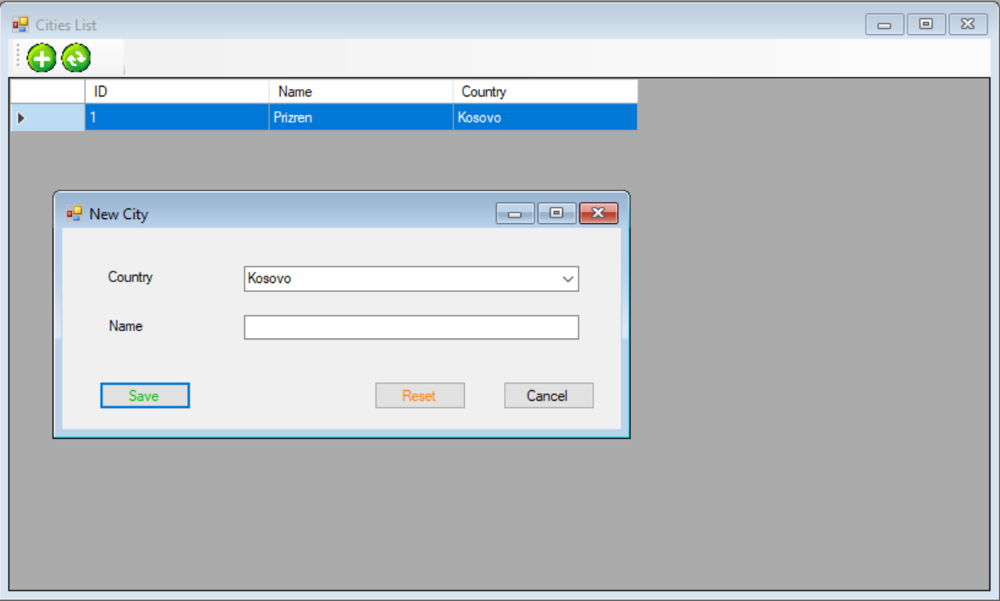
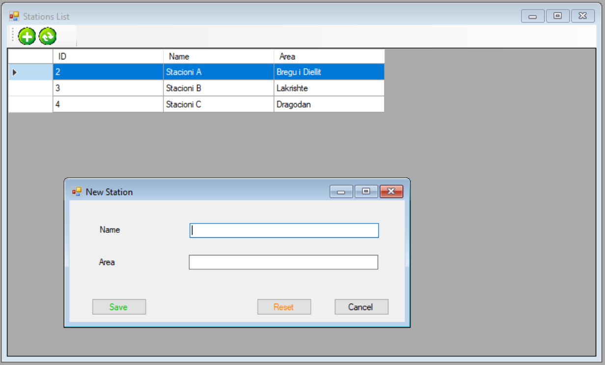
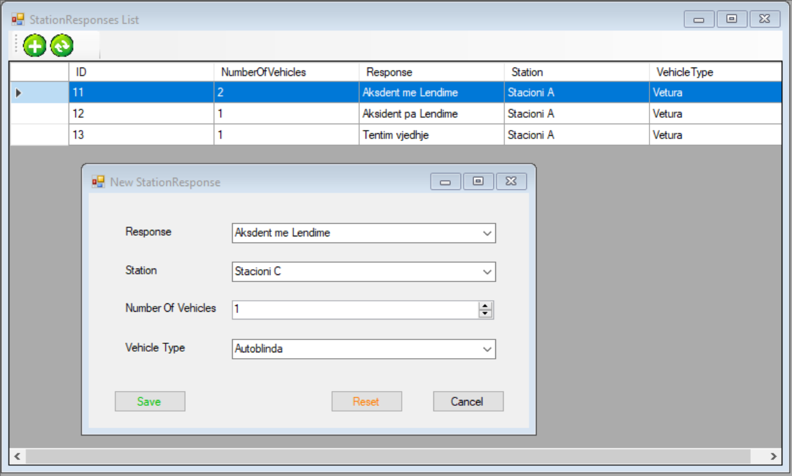
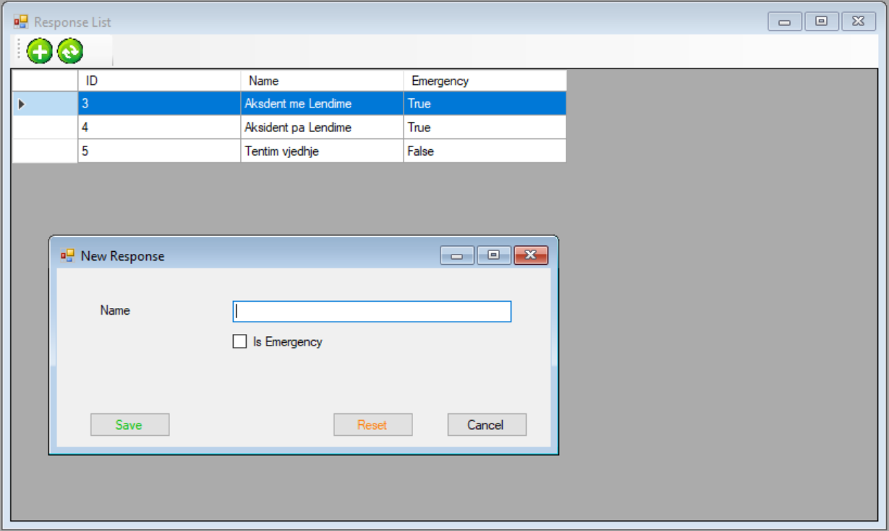

Doracaku i perdorimit
FleetManagment
Gusht 2019, Prishtine
Doracaku i perdorimit 1
Njohje me projektin 2
Login Form 3
Main Page 4
Incident Page 5
Vehicle 6
Location 7
Station 8
Response 9
Help 9
Njohje me projektin
Sistemi FleetManagment eshte nje sistemi cili mundeson menaxhimin me te mire te veturave te policise ne rast te incidenteve qe ndodhin ne vend.
Sistemi FleetManagment eshte i perbere ne kete menyre.
Login Forma
Faqja Kryesore (Main Page)
- Administration
- Current User
- User Account
- Incident
- Vehicle
- List of Vehicles
- Vehicle Types
- Location
- Countries
- Cities
- Station
- List of Stations
- Station Responses
- Responses
- Response Form
- Help
- User Manual
- About
Login Form
Ne momentin e pare qe hapet aplikacioni shfaqet forma per tu loguar ne aplikacion. Per momentin i kemi 2 lloje te usereve.
- Admin (Administratori qe ka qasje ne te gjitha funksionalitetet)
- Reporter (Reporteri qe ka qasje vetem tek forma e incidentit)
Fushat e nevojshme per tu loguar jane:

Main Page
Ne rastin kur kyqja ne sistem ka qene e suksesshme hapet nderfaqja kryesore e aplikacionit (Main Page)
Ne kete faqe ekziston menyja kryesore dhe pjese ku hapen nderfaqet tjera te klikuara nga menyja

Incident Page
Ne kete faqe ne pjesen e siperme ekziston forma per raportim te incidenteve kurse ne pjesen e poshtme gjendet lista e te gjitha incidenteve te insertuara

Vehicle
Ne kete element te menyse gjenden dy elemente tjera
- Vehicles (Hap nderfaqen e cila shfaq listen e automjeteve poashtu mund te hapet edhe nderfaqja per shtim/editim/fshirje te automjetit)
- Vehicle Types (Hap nderfaqen e cila shfaq listen e tipeve te automjeteve poashtu mund te hapet edhe nderfaqja per shtim/editim/fshirje te tipit te automjetit)

Location
Ne kete element te menyse gjenden dy elemente tjera
- Countries(Hap nderfaqen e cila shfaq listen e shteteve poashtu mund te hapet edhe nderfaqja per shtim/editim/fshirje te shtetit)
- Cities (Hap nderfaqen e cila shfaq listen e qyteteve poashtu mund te hapet edhe nderfaqja per shtim/editim/fshirje te tipit te qytetit)


Station
Ne kete element te menyse gjenden dy elemente tjera
- Stations (Hap nderfaqen e cila shfaq listen e stacioneve poashtu mund te hapet edhe nderfaqja per shtim/editim/fshirje te stacionit)
- Station Reponses (Hap nderfaqen e cila shfaq listen e pergjigjeve te stacioneve poashtu mund te hapet edhe nderfaqja per shtim/editim/fshirje te pergjigjes se stacionit)

Response
Ky element ne meny hap nderfaqen e pergjigjeve te sistem ne rast incidenti

Help
Ky element ne meny permbane nje tjeter element te quajtur User Manual dhe ne rast klikimi apo ne rast te shtypjes se tastit F1 do hap manualin e perdorimit.